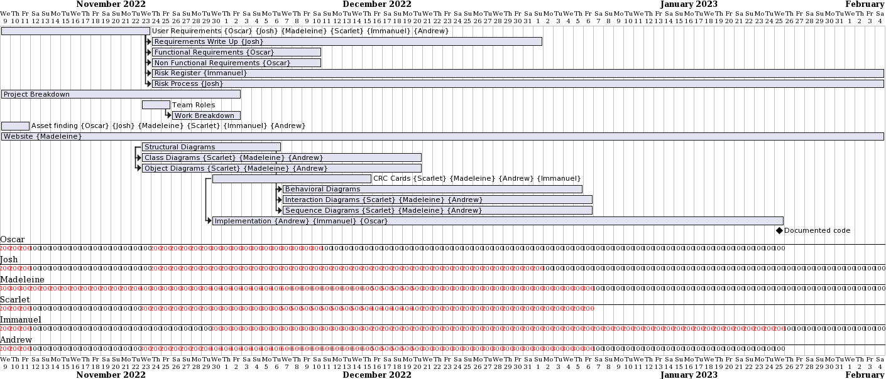

These are the weekly snapshots of our project plan and how it has evolved
Week commencing 14/11/2022

This was our first gantt chart. It started in the second week of the project and ended once we had our client meeting. We felt this was a good time frame as this was our first big milestone, and we had to complete user requirements and questions beforehand. This plan was achievable and we most of the deliverables seen. We did not start the risk register as we had not thought much about However, looking back on our process, it would have been beneficial to create this plan earlier as we made it mid-week.
Week commencing 21/11/2022

This week we decided it was more beneficial to make a full representation of our full project in our gantt chart. This plan is likely to change as we are unsure of times and completion dates. We have included some dependencies, i.e. we cannot start the implementation without the architectural diagrams. By this point we had our client meeting and we had finished the user requirements, after some guidance. Not all tasks have been assigned to a team member as of yet as the tasks have not been fully broken down. This week we made this plan quickly which was very beneficial. However, we need the plan to be more detailed.
Week commencing 28/11/2022

After a QnA session we realised it was beneficial to start the implementation even earlier than expected. This makes our project more parallel; implementation is less dependent on architecture. At this point we have still split ourselves into smaller teams to make the work more manageable. However, during in-person meeting we tend to work on tasks together instead. When we are away for the holiday period we expect to work more in our teams.
Week commencing 05/12/2022
It was harder to plan this weeks workload as the team is now remote due to the holiday period. It was up to the individual groups to decide their course of action. The plan stayed the roughly same as in these weeks there is just work to carry on with. The implementation team is nearer the beginning of their set of tasks. This means that the work that they plan to do this week is slightly more ambiguous. They hope to be able to get the design of the game more concrete and then start to get some of the simple functionalities working.
Credits: University of York: Madeleine Nielsen (mn1013@york.ac.uk), Scarlet Desorgher (sgd516@york.ac.uk), Immanuel Ghaly (ihaag500@york.ac.uk), Oscar Gunn (og676@york.ac.uk), Andrew Palombo (ap2179@york.ac.uk), Josh Thomas (jt883@york.ac.uk)